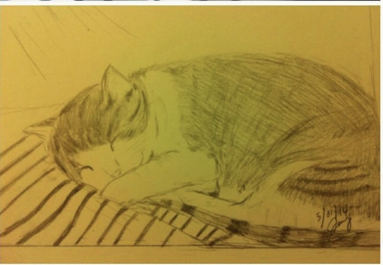

Hello there! My name is Jenny. Have you ever seen something that is really awesome and you want to capture the object in your perspective, drawing it
and freezing it in that time frame. Yes, drawing it. Anyone can draw. It take patience and practice. I am going to show you how to draw, what tools are available and some of my drawings.
“I sometimes think there is nothing so delightful as drawing."
My background in drawing
I came from a family that like to draw. Many people in my family like to draw like my sister and father,
but they are not professional artists like me. I started to draw when I was kid and the first picture I seriously put effort into
is drawing my little sister standing in the yard and I was really proud of it. From then on, I started to draw human figures, animals,
and flowers whenever I have the time. Drawing really helps reduce stress and take your mind off anything.
"In drawing, nothing is better than the first attempt."
How to draw
Many people take drawing classes to learn techniques and styles but if you do not have the time or money, you can learn to draw from Youtube videos
or some cheaper classes online like Udemy. This allow you to watch and learn at your own pace. But you can also start simply by sketching on a piece of paper. I had not taken any drawing classes but I started doing sketching and practicing to perfect the shapes and details. Most people begin by drawing a circle or oval for the head and another bigger circle or oval for the body and many places teach students to do it that way. For me, I have not been through any training so I am use to
start drawing the object's face outline and then fill in with details and shaping to match the actual object. After I finish drawing the main feature of the face,
I start to draw the body and shape it to make it portionate to the whole picture of the object. Here are step to do some basic drawing:
Find a quiet place and time to sit down. Start slowing by finding something simple to draw like a cup or a spoon. As you advance, you can find something inspiring and harder.
Use pencil and drawing booklet to start out. Pencil is easy to make adjustment so you can erase any lines that you don't like.
Start by drawing a circle and press lightly so you don't have to erase too hard if you mess up.
Work slowly to shape it into the size similar to your object. Look at the ratio of your object and make sure you match portionately to your other components.
If you are stuck with drawing the feature, you can always come back another time to have a fresh perspective so you can see how you can draw it.
Take a drawing class at a school or online to learn and further develop techniques and styles. Check out the below websites for drawing classes:
Many of the tools mentioned below are available in art stores like Blick or Utrecht and they are not very expensive. The electronic tablet can be bought online like Amazon or other electronic stores. Choosing the type tools depend on what types of art you want to do: drawing, painting, oil painting, water color painting and others. If you need help in finding your materials, the store associate can help you. Below is a list for some of the tools for drawing:
Regular pencil and charcoal stump/pencil- These are basic tools for drawing and they are very accessible. I like to use a pencil to draw so I can erase lines as I work on it. This creates black and white picture. If I need to add outlines and shading, I can use charcoal stump/pencil.
Color pencils and water color pencil- This will add colors immediately to the picture. There are erasable color pencils now in art stores.
Electronic tablet with digital pen-I have not used any electronic tools to draw but they are great versatile tools that you can buy to use it with a computer. The advantages of using a tablet are that it can be saved an electronic version and stored safely on the computer or online. Drawing files can be share immediately by uplaoding websites or emailing it to people. Other advantage is tablet can be set up to duplicate a larger image of drawing on computer so display finer details . This technology is very flexible that you can erase, do different layers and experience with colors when it is installed with software. But the downside of this is the price. It is expensive device costing anywhere from $199.99 and upward. There are cheaper ones without screen display so it only output the image to the computer screen.
Color pencils are another great tool. Image by Miesha MaidenTablet can hook up to a computer. Image by DanieleThe common tools I use for drawing. Image by Jenny C.
Some of my drawings

One of my older drawings by pencil. Image by Jenny C.One of recent drawings by pencil. Image by Jenny C.